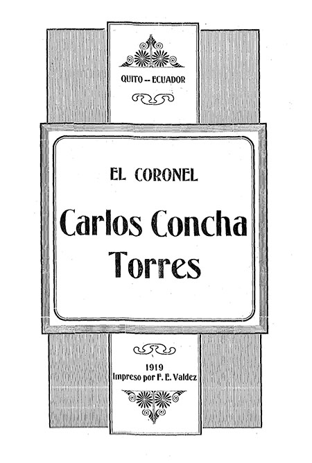
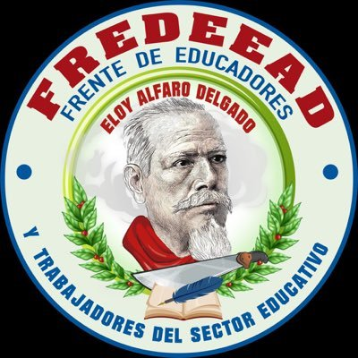

Antonio preciado:
Biografia:
Poeta y educador esmeraldeño nacido el 21 de mayo de 1941, hijo del señor Vicente Preciado y de la señora Felicia Bedoya.
Su padre, abandonó el hogar cuando él tenía pocos años de edad y lo dejó junto a su madre y sus 4 hermanos. En su niñez tuvo que lidiar con varias adversidades, como fue la pobreza. Con el paso del tiempo logró terminar los estudios primarios, para empezar a cruzar los estudios secundarios, en el Colegio 5 de Agosto de la ciudad de Esmeraldas. Cuando obtuvo el título de bachiller, se trasladó a la ciudad de Quito para ingresar a la Pontificia Universidad Católica del Ecuador, en la cual escogió la Facultad de Ciencias Políticas y Económicas, carrera la cual logró terminar, obteniendo el título de Licenciatura, Licenciado.
Logros.: Su vida ha estado llena de éxitos: En 1965 obtuvo el Primer Premio en el Concurso Nacional Ismael Pérez Pazmiño, organizado por diario El Universo; y dos años después, con su obra «Siete Veces la Vida» obtuvo el Primer Premio en el Festival Nacional de las Letras de la Universidad de Guayaquil.
Libros:
1: De sol a sol en 1979
2: De ahora en adelante en 1993
3: De boca en boca en 2005
4: De lo demás al barrio 2013
Nelson Estupiñan Bass:
Biografia:
Escritor esmeraldeño nacido en Sua el 19 de septiembre de 1912, hijo del Sr. José María EstupiñanEstupiñan y de la Sra. María Timotea Bass Trejo.
De muy temprana edad sus padres pasaron a radicarse en la ciudad de Esmeraldas donde, mientras sus hermanos mayores asistían a la escuela, el daba alas a sus inquietudes juveniles: “Dediqué la mayor parte del tiempo a andar por los muelles pescando con anzuelos, y a ir, como espectador, a los bailes de marimba en Barrio Caliente, donde me divertía oyendo los contrapuntos de los copleros y decimistas (compositores) negros y mulatos. Me encantaba escucharlos, y, al volver a casa, llevaba en la cabeza algunos versos que repetía en el camino” (Testimonios, El Universo, julio 22 de 1998).
Logros.: En 1934 tuvo oportunidad de publicar sus poemas «Anúteba» y «Canto a la Negra Quinceañera», que aparecieron en el diario socialista «La Tierra» de Quito. Ese fue el inicio público de una obra literaria que alcanzaría las más altas cimas de las letras ecuatorianas, y llevaría su nombre y obra a las bibliotecas y librerías de muchos países del mundo
Libros:
1: El ultimo rio en 1966
2: Senderos brillantes en 1974
3: Bajo el cielo nublado, novela en 1981
4: Cuando los guayacanes florecían en 1987
Seledina Nieves :
Biografia:
Nació en esmeraldas el 25 de noviembre de 1977 es una halterófila ecuatoriana nieve gano la medalla de oro en los juegos Panamericanos de 2007. Ella gano también la medalla de oro en el torneo preolímpico celebrado en Guatemala en 2012, ganado el derecho de participación en los juegos olímpicos de Londres.
Logros:
1: Medalla de plata en campeonato panamericano, 2001
2: Medalla de plata en juegos Bolivarianos, 2001
3: 6 Medallas de plata en campeonato Panamericano, 2002
Reconocimiento:
Carlos concha :
Biografia:
Político y militar esmeraldeño nacido en la hacienda San José, perteneciente a su familia, a orillas del río Teanone, el 11 de agosto de 1864. Fue hijo de don Uladislao Concha Piedrahita y de doña Delfina Torres de la Carrera, viuda de Jorge Vargas y madre del héroe Luis Vargas Torres.
Perteneció a una familia acomodada que por su situación económica le permitió realizar sus primeros estudios en la ciudad de Guayaquil, para posteriormente continuar la secundaria y los primeros cursos de medicina en los EE.UU. de Norteamérica.
Logros.: A principios de 1895, al estallar el escándalo de la «Venta de la Bandera» encabezó los primeros movimientos revolucionarios esmeraldeños en contra del gobierno del Dr. Luis Cordero, quien el 15 de abril se vio obligado a renunciar y entregó el poder al Presidente del Congreso Dr. Vicente Lucio Salazar. Pero los liberales no estaban dispuestos a aceptar que el gobierno caiga en manos de los conservadores, por lo que continuaron la lucha armada. Fue entonces cuando, al mando de los revolucionarios, el 23 de abril se tomó la ciudad de Esmeraldas y fue designado Jefe Civil y Militar.
Reconocimiento:

Alfaro Gral Eloy :
Biografia:
Revolucionario, militar y político nacido en Montecristi, provincia de Manabí, el 25 de junio de 1842, hijo del ciudadano republicano español Cap. Manuel Alfaro González y de la Sra. Natividad Delgado López.
Su educación fue muy modesta, y la recibió y terminó en su lugar natal, luego de lo cual se dedicó -aunque por poco tiempo- a diferentes actividades comerciales. “Durante su juventud se nutrió de doctrinas libertarias, de modo que al conocerse la noticia de que García Moreno proyectaba poner al Ecuador bajo la protección de una nación europea, se afilió de hecho a las filas liberales y se lanzó a la lucha armada”
Logros.: Uno de los principales aportes de Eloy Alfaro fue la creación de colegios públicos laicos, eliminado el monopolio de a la Iglesia católica en la educación. Estas medidas fueron inspiradas por librepensadores como Juan Montalvo y José Peralta, quienes impulsaron la secularización de la sociedad ecuatoriana. La creación de colegios públicos y de colegios privados para la formación de profesores laicos, fue una de las principales tareas de Eloy Alfaro. Una de las medidas de la Revolución liberal que se mantuvo durante décadas fue la obligación de los estudiantes de los colegios católicos de rendir sus exámenes y validar sus conocimientos ante los maestros laicos del Estado. El primer colegio laico del país que fue fundado en 1896 por Eloy Alfaro fue el colegio Bolívar de la ciudad de Tulcán, siguiéndole colegios como Juan Montalvo, Mejía y Manuela Cañizares de Quito.
Reconocimiento:
